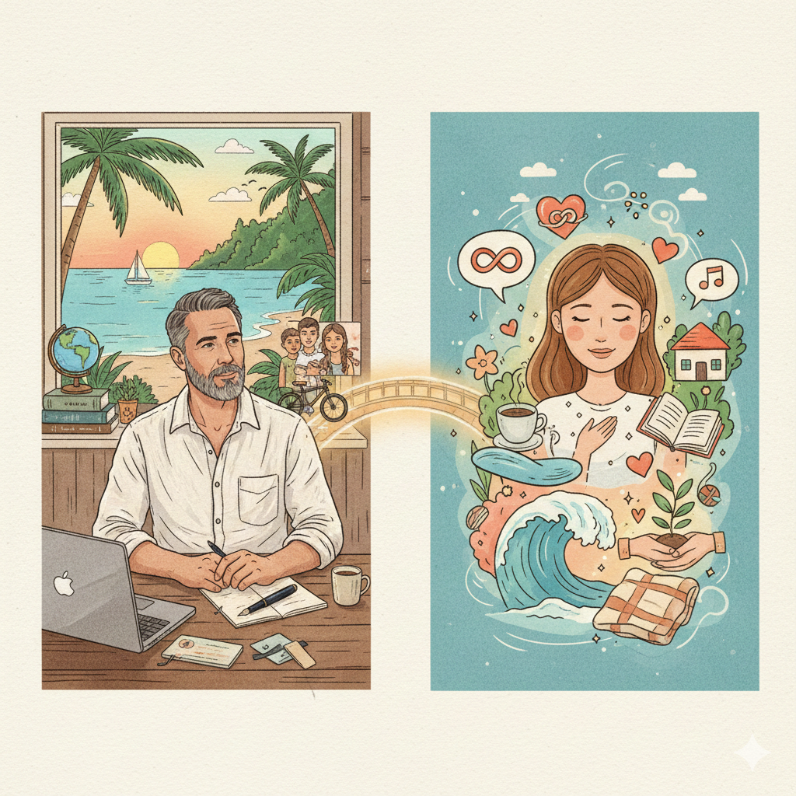

The Relationship or Person That I Would Want
This article provides some information about the relationship that I would want or person with whom I would want to have such a relationship. This is not a personal ad; it's more like preparing an explanation in case I ever do meet anyone. To be honest, I'm not really looking - I know that I can't actually be in a relationship right now. I didn't really think about this or structure it much, so it's more like a stream of consciousness exercise.
Originally published to:
For context, I'm a heterosexual white male US citizen that was born in 1973. I have earned enough that, if I can keep my costs low, I don't have to work anymore. One of my challenges is that it is very difficult to find a woman that has similar resources and freedom at this age, especially as I don't think that people should inherit much or take much from a former partner. I don't think I'm being misogynistic; I just consider it to be a sad reality that women have greater challenges earning, saving, and investing money.
While I would prefer to be with someone that is attractive and healthy with positive self-esteem, style and appearance are generally less important to me than spirit, personality, integrity, and other personality traits. Though I generally get along better with people my age or older, as I age, it seems more important to find someone younger than me that has more energy to take care of responsibilities. I don't mean significantly younger, which has its own drawbacks - but almost certainly not more than a couple of years older than me. Google generated an image of a white woman, but I seem to prefer people from cultures other than my own. I'm also older and pretty gray and bald relative to the guy shown.
I'm generally open-minded, but when it comes to relationships, I'm relatively conservative and maybe even old-fashioned. I have not been in many relationships and have reservations about others that have. I prefer monogamous, committed, long-term relationships built on care and affection, not short-term relationships or anything that feels transactional, though I fear that all relationships must be somewhat transactional, or else there is an uncomfortable imbalance. I wouldn't have any objection to providing for a partner if I could find a trade-off that worked for me. That would require finding someone happy in a more traditional female gender role. I have definitely seen that women that mostly want to care for a family and a partner and a household without the constant pressure to earn money still exist, especially in Asia. I just haven't found the right person.
While I would participate and contribute, such a role would involve things like shopping and taking care of other errands, cooking, cleaning, and decorating the home, none of which reflect my personal interests. I've done those things enough for myself; I want to spend most of my time pursuing my own interests, such as writing, travel, and outdoor activities.
I'm aware that I'm an unusual character and that doesn't work for everyone. In the past, I learned to hide it. These days, I'm less comfortable trying to be someone other than myself to please others. Any relationship that isn't built on being our genuine selves isn't likely to last anyway. Any partner would have to accept some unpleasant things about me and my past.
From my ex-wife, I have a couple of teenage boys in Portland, OR, where I hope to sell my house in the summer of 2026. I also have a six-year-old daughter in Laos (and her older half-sister), where I bought a house for her mother. I spend most of my time in Laos and Thailand. I can stay at the house in Laos, but I often stay in a hotel because the mother is sometimes very difficult. I am relatively flexible, but any actual partner would have to accept all of this.
I have had a few significant relationships:
-
My first real girlfriend, with whom I lived for almost ten years. I loved her, but never really committed to the relationship. She cheated on me several times, which broke my heart and was probably the root cause of our relationship failing.
-
My ex-wife, with whom I had a horrible and lonely marriage. I would describe her as mechanistic, materialistic, emotionally abusive, deceptive, and manipulative. She was either extremely misleading when we met or completely changed her life goals after we married.
-
The mother of my daughter in Laos, who I connected with shortly after my divorce, which was a mistake. If we didn't have a child together, we almost certainly wouldn't have anything to do with each other now.
-
My former girlfriend that self-deported from the USA to Mexico. That relationship had many problems, but it was nice to feel more cared for and understood than I had in my lonely marriage and the relationship that came after it.
I have had a few other short-term relationships. Interestingly, I'm still friends with most of these women, although I'm really getting tired of them asking me for money. Note that I have male friends that ask me for money too.
I'm over 50. My testosterone and muscle mass are certainly declining. I'm trying to take better care of myself these days, but I recently broke a couple of toes in a motorbike accident, so I haven't been able to exercise the way I would like (generally mountain biking). I haven't completely lost interest in sex, but I've learned that I can live without it, which is better than being in the wrong relationship or staying in any relationship for the wrong reasons. To be honest, I think that I have always sought affection more than sex. I like physical interactions to be enjoyable for everyone, not one-sided or boring or extremely limited.
I don't really care for compliments but I like words of appreciation, smiles and eye contact, hugs, caresses, massages, gropes, and things of that nature, not just sex. I like conversation and companionship but I also need a lot of time to myself. I even like quiet moments when I'm with someone; I don't need to fill every silence with words. I'm not a fan of small talk; I prefer topics such as politics, economics, current events, philosophy, psychology, technology, spirituality, and especially humor. I'm definitely interested in personal growth, though I have no idea why or toward what I might be heading. I like people that have similar values (such as bettering the world for animals, plants, and people) but very different experiences and even perspectives. I like to be challenged, especially when I might be wrong, and I always want to learn from everyone. I prefer simplicity and don't like materialism.
Socially, I prefer activities such as hiking, swimming, sailing, or just sitting around the house or in the hotel room or at a nice resort with a single companion or small group. I like nature, especially the ocean. I prefer conversation to chaos, though I do like to get overwhelmed by crowds sometimes, for example at EDM shows or other concerts. I like to dance, especially to live music. I feel that I've outgrown most types of partying, which honestly never interested me much. I drink a little and smoke weed occasionally socially. I haven't done mushrooms in a while but would certainly consider them again. Other than an occasional experiment, I don't want to do hard or manufactured chemical drugs much, and I never have.
I have found that it's impossible to find everything that I would otherwise seek in a single person. I was lonely in and after my marriage and made some mistakes. Now I seem to be more comfortable being alone, especially after hearing from other people about the misery of their relationships.
Well, that's a lot to post in public, and I guess I wrote more about myself than what I would want. I maintain private copies of my writings, so I might update that without copying those changes to this blog post. Actually, I could have written a lot more about what I don't want in a person or relationship. What follows is something on this topic as generated by google's gemeni. This likely starts getting into incel territory, which I think does not represent me. This output is based at least partly on this video:
This list summarizes the primary reasons a man, particularly one with past relationship experience, may choose not to pursue a relationship with a woman, based on the provided text's central theme: a cost-benefit analysis that prioritizes personal peace and autonomy.
🕊️ The Calculated Choice: Why Men Choose Solitude
The decision to remain single is presented as a rational conclusion based on the perceived high costs of a relationship versus the diminishing returns of companionship.
Cost: Loss of Autonomy and Personal Freedom
- Sacrifice of Peace and Quiet: Giving up the "hard-won autonomy" and the "deep sustainable peace" found in solitude. The home is an anxiety-free space without "tense silence of unspoken resentment" or someone's mood to manage.
- Loss of Ownership and Control: Giving up ownership of one's time (no obligation-filled weekends, no "honeydew lists"), physical space (no one rearranging things or having opinions on how he lives), and schedule (the day and evening belong entirely to him).
- Forgoing Hobbies and Interests: Giving up personal passions, projects, and hobbies that were "sacrificed" or "squeezed out" due to the partner's disapproval or the time relationship maintenance required.
- Compromise and Negotiation Fatigue: Avoiding the constant need for negotiation, compromise, and the erosion of personal will that starts subtly and eventually leads to a completely different life.
- Reclaiming Financial Control: The desire to spend money on what he values (tools, trips, hobbies) instead of funding someone else's lifestyle, dealing with financial entanglement, or helping with her debt/retirement.
Cost: Emotional Labor and Mental Stress
- Exhaustion from Emotional Labor (The Invisible Tax): The refusal to pay the "invisible tax" of constantly managing someone else's emotional state, absorbing their stress, and being responsible for their happiness.
- Walking on Eggshells: Avoiding the stress of constant vigilance, measuring every word, calculating whether an issue is "worth the fight it would cause," and navigating a partner's mood upon coming home.
- Avoiding Drama and Conflict: Not missing the "drama, the manufactured crises," the need to mediate conflicts, or the "emotional emergencies" that demand attention.
- Escaping Surveillance and Testing: The refusal to live under a microscope, constantly being questioned about whereabouts, texts, and attention level, or enduring endless "testing" to see what he will tolerate.
- Dealing with Emotional Baggage: Not wanting to take on a new partner's unprocessed emotional baggage or past relationship issues, which are often blamed on previous men.
Low-Value Proposition of Modern Dating
- Unfavorable Cost/Benefit Calculation: The math overwhelmingly concludes the benefits (companionship, physical intimacy) are not worth the costs (peace, freedom, autonomy, money, time, emotional energy).
- Negative Dating Experience (The Audition): The indignity of having to "audition" and perform on dating apps, competing with numerous other men for a woman's attention when he is already established and has proven his value.
- Unreasonable Expectations: Encountering women with a long "list of requirements" (financial stability, availability, emotional understanding) who offer little in return beyond their "presence."
- Constant Comparison: Not wanting to be measured and compared against an ex-husband, previous boyfriends, or a "hypothetical perfect man."
The Benefit of Age and Perspective
- Clarity over Chemistry (The Testosterone Gift): The realization that declining testosterone has removed the "override" on judgment, allowing decisions to be based on logic and reality rather than hormonal urges.
- Wisdom over Urges: Reaching a point of wisdom where he can prioritize peace over sex and is no longer "controlled by urges that don't serve your actual interests."
- Avoiding Future Caretaking: The strong aversion to the thought of the inevitable physical decline conversation and the caretaking burden that comes with an aging partner, especially for a relationship that has not "earned that level of sacrifice."
- Protecting What's Left: Acknowledging he has "done his time," "met every obligation," and choosing to be "selfish with what's left"--prioritizing his own well-being over someone else's expectations.